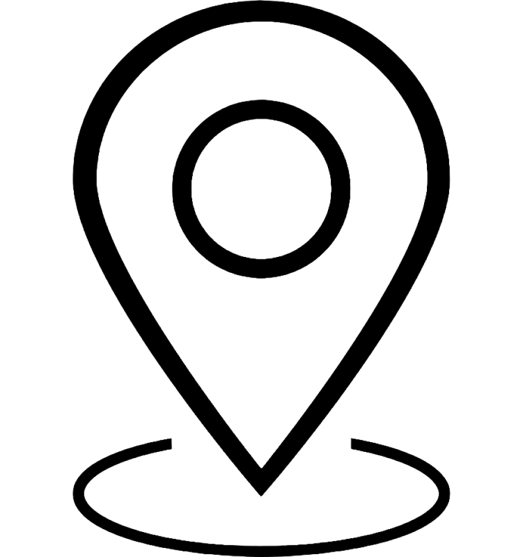

Sobre mim
Ola! Meu nome é Carlos Eduardo Cardoso Barreiros. Tenho 19 anos e atualmente estou cursando o quarto
semestre de Ciência da Computação
na Universidade Anhembi Morumbi. Eu completei minha educação primária em 2022 no Colégio Adventista da
Liberdade. Eu sempre tive
paixão por computadores e uma aptidão natural para assuntos relacionados.
Fiquei muito tempo sem saber o que queria fazer. O futebol sempre foi uma prioridade para mim desde a
infância. Tenho experiência em clubes de futebol de São Paulo e até joguei profissionalmente na
Alemanha, onde passei seis meses competindo no torneio regional do Fv Rot-Weiß Weiler. Nesse período lá
eu morava sozinho no apartamento do clube e consequentemente melhorei meu inglês, pelo fato de que a
maioria das pessoas ao meu redor se comunicavam em inglês.
Por outro lado, mesmo que eu estivesse jogando futebol em 2022, não descartei a oportunidade de seguir
carreira em TI, sempre vi com bons olhos. Nunca deixei os estudos de lado, sempre me dediquei e me
compromenti em relação aos meus estudos e vida profissional no futebol. Não é à toa que mesmo na
Alemanha conciliei os estudos transferindo minha matrícula para EAD e mantendo meus cursos extra
curriculares nas horas vagas. Porém, em julho de 2024, quando retornei ao Brasil, concluí que estava
disposto a tomar uma decisão sobre meu futuro e me dedicar 100% a uma só coisa. Resolvi construir minha
carreira nesse mundo da tecnologia, com qual tenho me relacionado muito bem.
Atualmente busco minha primeira experiência profissional em TI, onde pretendo crescer profissionalmente,
aprender muito e aplicar meus conhecimentos, como:
Programação (back-end/front-end), Bibliotecas e Frameworks de Programação (jQuery, VueJS, React,
Angular...), Banco de Dados Relacional (SQL),
Banco de Dados Não-Relacional (NoSQL), UML, Requisitos de Sistema, Redes de Computadores ou Segurança da
Informação. Algumas de minha habilidades incluem foco e organização, bom relacionamento interpessoal,
trabalho em equipe e forte potência para aprendizagem. Embora meu inglês já esteja avançado, estudei por
cinco anos no CNA e pratiquei durante minha estrada na Alememanha, tenho estudado com um professor
particular para aprimorar ainda mais meu inglês.
Habilidades técnicas
Projetos
Aplicação JavaBet
tecnologias usadas: UML e Engenharia de Requisitos
Melhoria para OneFootball
tecnologias usadas: UML and Engenharia de Requisitos
Contatos
-

+55 11 95039-4818
-

cadu1117@hotmail.com
-
Carlos Eduardo Cardoso Barreiros
-

São Paulo, BRASIL